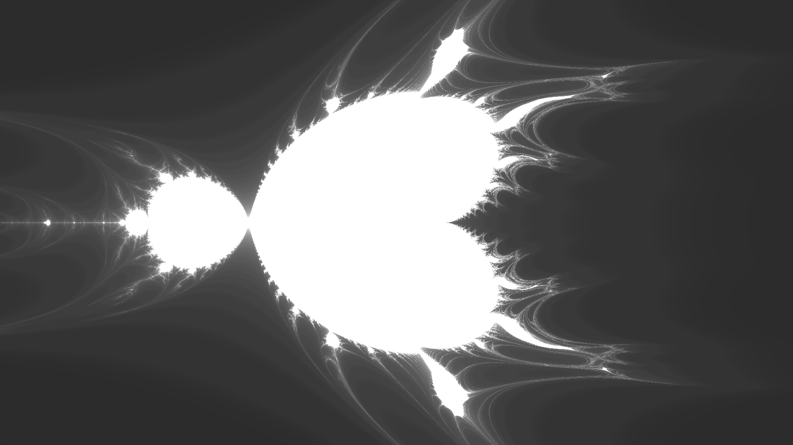

each of these fractals was made by modifying a program made by daniel shiffman that creates a visualization of the mandelbrot set. see my thoughts on computaional idealism and it's place in my work created around this time in simplifications.
fractal I (fractal III zoom) (2023)
fractal II (2023)
fractal III (2023)
fractal IV (2023)

fractal V (2023)
fractal VI (2023)